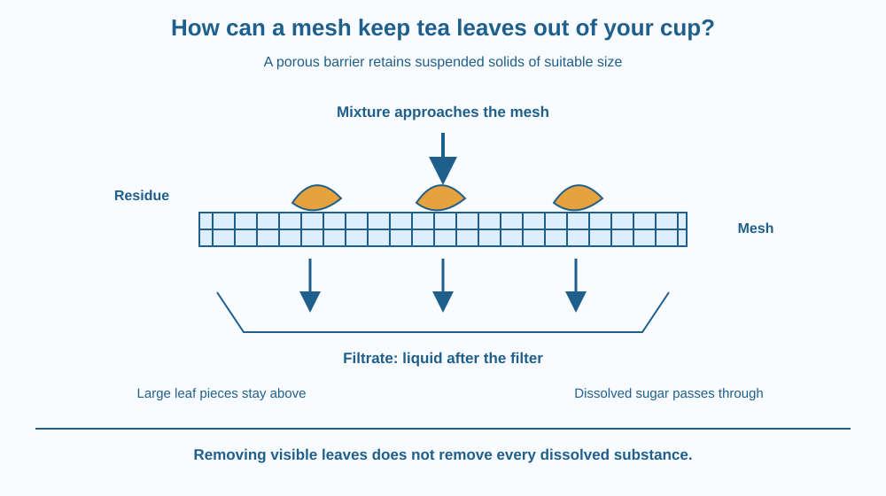

Explain filtration using a kitchen strainer. Identify the mixture, filter, residue and filtrate. Predict which changes help remove smaller suspended pieces, and explain why a drink can remain coloured or sweet after visible tea leaves have been removed.
A tea seller pours a mixture through a strainer. The liquid reaches the cup, but most leaves stay behind. The tea still has colour and taste. A small wire grid has made a useful separation, but it has not removed everything that came from the leaves.
Now imagine replacing that strainer with one containing much larger holes. Would the same leaves remain behind? And if you replaced it with a much finer filter, would dissolved sugar necessarily disappear too? These questions reveal both the strength and the limit of a simple filter.
A mesh is a network with openings. In a kitchen strainer, wires define many small openings through which liquid can pass. Suspended leaf pieces are often too large to pass through easily, so they are retained.
Separating suspended solid material from a fluid using a porous barrier is called filtration. The barrier may be woven wire, cloth, paper or another porous material. Its structure must allow the fluid through while retaining at least some of the unwanted particles.
The material retained is the residue. The liquid collected after passing through is the filtrate. These words describe the two outputs of the process. They do not tell you that either output is pure or safe to consume.
The key comparison is between the effective size of an opening and the size and shape of a suspended piece. A large leaf fragment cannot easily cross a small opening. A very fine fragment may pass through a coarse mesh. Flexible fragments can also bend, and irregular particles may orient differently.
A finer filter can retain smaller suspended pieces, but it often slows the flow. It may have smaller passages, and those passages may become blocked. A pile of retained solids, sometimes called a filter cake, adds another layer that the liquid must cross.
A filter cake can improve retention of some particles while reducing flow. This does not mean that endless layers are always desirable. A useful design must balance clarity, speed, capacity and ease of cleaning.
Dissolved substances behave differently from suspended leaves. Sugar dissolved in tea is not present as intact visible sugar grains. Its dissolved particles pass through an ordinary kitchen mesh with the water. Many dissolved tea compounds also remain, which is why the filtrate retains colour and taste.
Some specialised membranes can separate certain dissolved materials. An ordinary tea strainer is not such a membrane. Avoid the misleading rule that “filters remove everything smaller than we can see” or that “clear water must be safe.” The performance depends on the filter and the substances present.
Imagine people approaching a doorway. A wide box cannot fit through a narrow opening, while a small object can. The mesh acts as many doorways at once. Retention depends partly on whether the solid can negotiate those openings.
The analogy has limits. Water is a flowing material rather than a queue of people, and flexible particles do not behave like rigid boxes. Still, the doorway comparison makes one prediction clear: increasing opening size can allow more solid pieces through.
Draw an arrow into a filter and two outputs. Label the solids remaining above as residue and the collected liquid below as filtrate. Include dissolved sugar symbols in both the incoming liquid and the filtrate.
The SVG shows a mixture entering a grid. Large amber leaf shapes remain above the mesh, while blue liquid arrows continue below. Labels identify residue, mesh openings and filtrate in separate text regions.
A second small comparison shows a coarse and a fine grid with the same example particle. The drawing uses exaggerated sizes so the comparison is visible. It is not a scale drawing of wire openings or sugar molecules.
A caption states that dissolved sugar passes an ordinary strainer. Removing visible leaf pieces therefore changes the drink's suspended solids without removing all dissolved compounds.

Tea stalls and home kitchens across India rely on this separation. The strainer's design affects how quickly a cup can be poured and how many fine fragments reach it. A very fine mesh may need cleaning more often.
Cloth filtration of a kitchen mixture uses the same general size-exclusion idea, but folded cloth has a more complicated path than a single wire mesh. A paper coffee filter has still another pore structure.
A strainer used to catch food scraps at a sink protects the drain. It does not remove dissolved salt or make the wastewater drinkable. Knowing what a device retains is as important as noticing that something passes through it.
Use room-temperature water, a kitchen strainer, a bowl and a little coarse loose tea. An adult should supervise handling and cleanup. No kettle, stove or hot drink is needed.
Do not taste experimental samples. A visual comparison cannot measure dissolved sugar reliably. The final step is a prediction based on particle form, not a claim that sweetness can be judged by looking.
A filter initially allows liquid through quickly, then slows as solids accumulate. Has the original mesh necessarily changed size? Explain how retained material can obstruct the available paths even when the wires remain unchanged.
Now consider pouring the mixture around the outside edge rather than through the mesh. A device can have an excellent filter material and still fail if liquid bypasses it. The frame and seal matter too.
What is the liquid collected after filtration called?
Answer: C — Filtrate is the fluid that has passed through the filter.
Why does dissolved sugar pass through an ordinary tea strainer?
Answer: B — Dissolved sugar particles pass with water through the comparatively large openings.
What is likely as more leaf residue blocks a mesh?
Answer: A — Accumulated solids obstruct pathways and can reduce the filtration rate.
Design a reusable strainer for a busy tea stall. Choose between a coarse single mesh and a finer mesh that needs more frequent cleaning. Explain which pieces each design is likely to retain and what happens to pouring speed as residue accumulates.
Include a rim that directs the mixture through the filter instead of around it. Finish with one honest limitation: your design separates suspended pieces but does not remove all dissolved substances.
A filter can become better at retaining some fine solids as it becomes worse at letting liquid flow. The collected residue adds new obstacles, so clarity and speed can change in opposite directions. Good filtration design is therefore a continuing balance, rather than a contest to make every opening as tiny as possible.
A mesh retains many suspended pieces larger than its openings, while the filtrate can still contain dissolved sugar, colour and other substances.